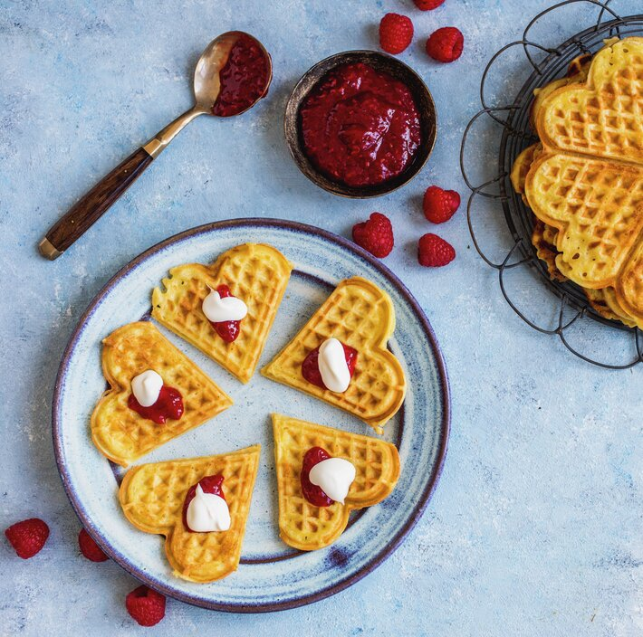

Vafler

Norwegian Vafler (Waffles)
· · · Method · · ·
240 gall-purpose flour90 gwhite sugar1 tspbaking powder1 tspcardemom400 mlwhole milk½ tspsalt3eggs1 tspvanilla extract100 gbutter, melted
Place all the dry ingredients in a bowl and add the milk, a little at a time. Mix well each time.
Add the eggs, melted butter, and mix. Leave it for ½ hour. Add more milk or water if the batter is too tick.
Fry the waffles using a Norwegian waffle iron.